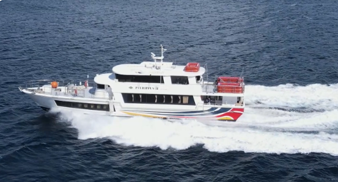
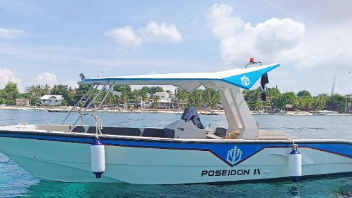

.png)
1950 Passenger Boat
A comfortable and spacious passenger boat perfect for island hopping, coastal tours, and marine transportation. Built for medium-range island routes, it pairs a stable hull with a generous passenger layout for smooth, everyday sea travel.
General Specifications
- Length Overall: 19.5 m
- Beam: 4.2 m
- Mold Depth: 1.6 m
- Draft: 0.6 m
- Engine Power: 700 HP
- Aux. Engine: 8 kW
- Speed: 18 knots
- Complement: 65 persons
- Fuel Capacity: 1,000 L

2680 Passenger Boat
A high-performance long-range fastcraft built for large-capacity inter-island passenger transport. As the largest model in the lineup, it combines speed, range, and deck space for busy sea routes and high-volume operations.
General Specifications
- Length Overall: 26.8 m
- Beam: 6.0 m
- Mold Depth: 2.3 m
- Draft: 1.3 m
- Engine Power: 1800 HP x 2
- Aux. Engine: 38 kW x 2
- Speed: 25 knots
- Complement: 180 persons
- Fuel Capacity: 6,000 L
.jpg)
Patrol Boat
A fast and durable patrol boat designed for coastal security, law enforcement, and marine surveillance operations. Reinforced construction and a 32-knot top speed keep it ready for demanding duty at sea.
General Specifications
- Length Overall: 12.0 m
- Beam: 3.3 m
- Mold Depth: 1.5 m
- Draft: 0.45 m
- Engine Power: 500 HP
- Speed: 32 knots
- Complement: 4 persons
- Fuel Capacity: 1,000 L
.jpg)
Speed Boat
A high-performance speed boat built for fast water travel, water sports, and recreational activities. Its lightweight fiberglass hull reaches 36 to 40 knots while staying easy to handle and maintain.
General Specifications
- Length Overall: 5.8 m
- Beam: 2.25 m
- Mold Depth: 0.9 m
- Draft: 0.45 m
- Engine Power: 90-115 HP
- Speed: 36-40 knots
- Complement: 5 persons
- Fuel Capacity: 90 L

Parasail Boat
A specialized parasail boat designed for thrilling water adventures and tourism. Built with a reinforced tow structure and a hydraulic winch system for safe, repeatable parasailing operations.
General Specifications
- Length Overall: 11.0 m
- Beam: 3.0 m
- Mold Depth: 1.5 m
- Draft: 0.5 m
- Engine Power: 300 HP
- Speed: 20 knots
- Fuel Capacity: 200 L